The SCP package provides a comprehensive set of tools for single cell data processing and downstream analysis.
The package includes facilities for:
- Integrated single cell quality control methods.
- One-stop single-cell pipeline embedded with multiple methods for normalization, feature reduction, cell population identification.
- One-stop single-cell pipeline embedded with multiple data integration methods
- Multiple single cell downstream analyses such as differential feature identification, enrichment analysis, GSEA analysis, dynamic feature identification, PAGA, RNA velocity, etc.
- Multiple methods for automatic annotation of single-cell data and projection methods between single-cell datasets.
- Publication-quality visualization of multiple analysis results.
- Fast deployment of single-cell data to shiny app.
The functions in the SCP package are all developed around the Seurat object and compatible with other Seurat functions.
Installation
You can install the development version of SCP from GitHub with:
if (!require("devtools", quietly = TRUE)) {
install.packages("devtools")
}
devtools::install_github("zhanghao-njmu/SCP")Example
Load the Data
The analysis is based on a subsetted version of mouse pancreas data.
CellQC:
pancreas1k <- RunCellQC(pancreas1k)
ClassDimPlot(pancreas1k, group.by = "CellQC", reduction = "UMAP")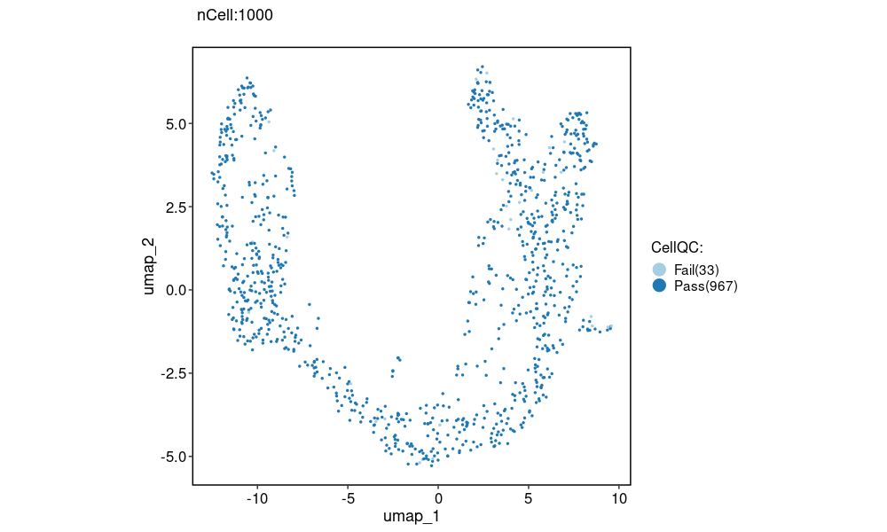
ClassStatPlot(pancreas1k, stat.by = "CellQC", group.by = "CellType", label = TRUE)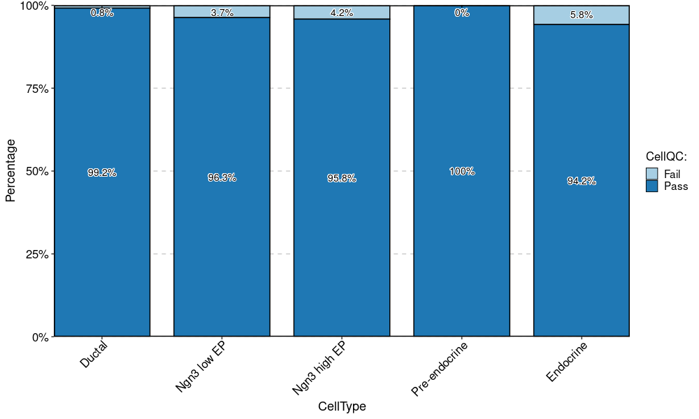
ClassStatPlot(pancreas1k, stat.by = c("db_qc", "outlier_qc", "umi_qc", "gene_qc",
"mito_qc", "ribo_qc", "ribo_mito_ratio_qc", "species_qc"), plot_type = "upset")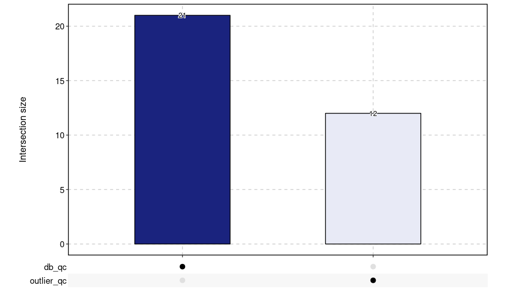
Standard SCP:
pancreas1k <- Standard_SCP(pancreas1k)
ClassDimPlot(pancreas1k, group.by = "CellType", reduction = "StandardUMAP2D")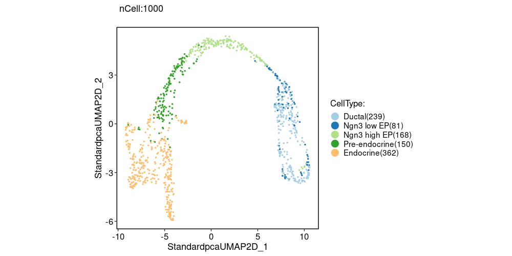
Integration SCP:
Example data for integration is panc8(eight human pancreas datasets)
if (!require("SeuratData", quietly = TRUE)) {
devtools::install_github("satijalab/seurat-data")
}
library(SeuratData)
suppressWarnings(InstallData("panc8"))
data("panc8")
panc8 <- Integration_SCP(panc8, batch = "tech", integration_method = "Seurat")
ClassDimPlot(panc8, group.by = c("celltype", "tech"), reduction = "SeuratUMAP2D",
theme = "theme_blank", ncol = 1)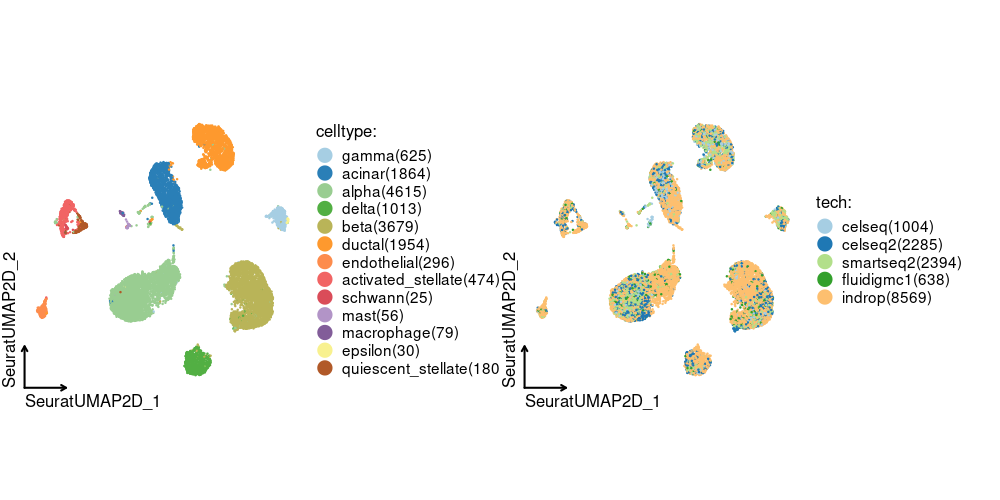
Cell projection between single-cell datasets:
library(stringr)
panc8 <- RenameFeatures(panc8, newnames = make.unique(str_to_title(rownames(panc8))))
pancreas1k <- RunKNNMap(srt_query = pancreas1k, srt_ref = panc8, ref_umap = "SeuratUMAP2D")
ProjectionPlot(srt_query = pancreas1k, srt_ref = panc8, query_group = "SubCellType",
ref_group = "celltype")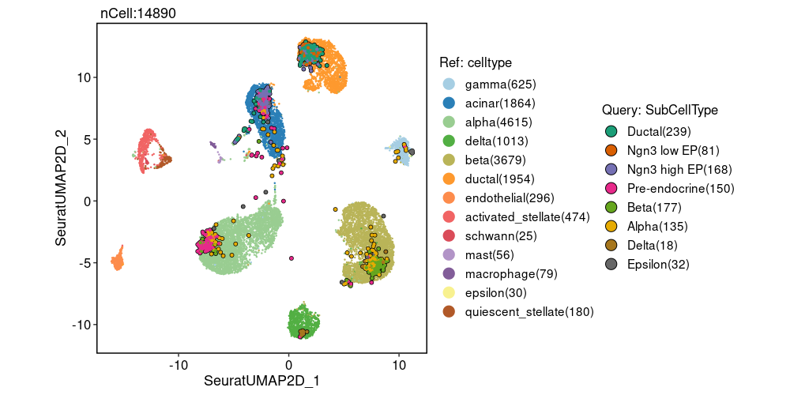
Cell annotation using bulk RNA-seq datasets:
pancreas1k <- RunKNNPredict(srt_query = pancreas1k, bulk_ref = SCP::ref_scMCA, filter_lowfreq = 20)
ClassDimPlot(pancreas1k, group.by = "knnpredict_classification", label = TRUE)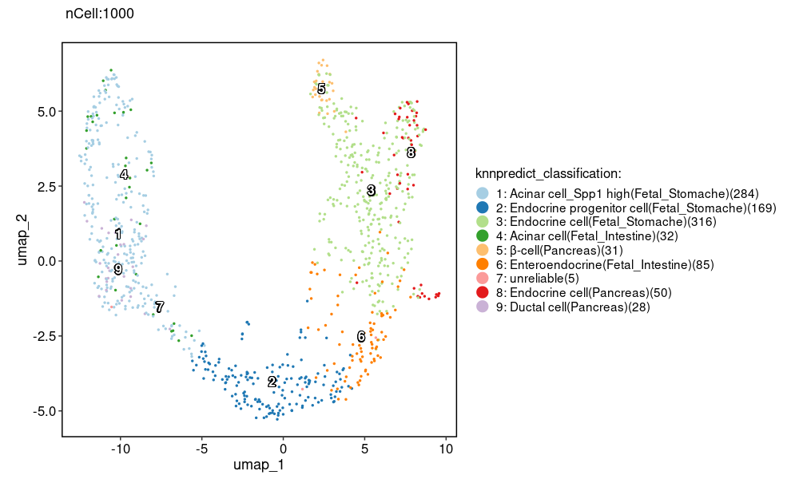
Cell annotation using single-cell datasets:
pancreas1k <- RunKNNPredict(srt_query = pancreas1k, srt_ref = panc8, ref_group = "celltype",
filter_lowfreq = 20)
ClassDimPlot(pancreas1k, group.by = "knnpredict_classification", label = TRUE)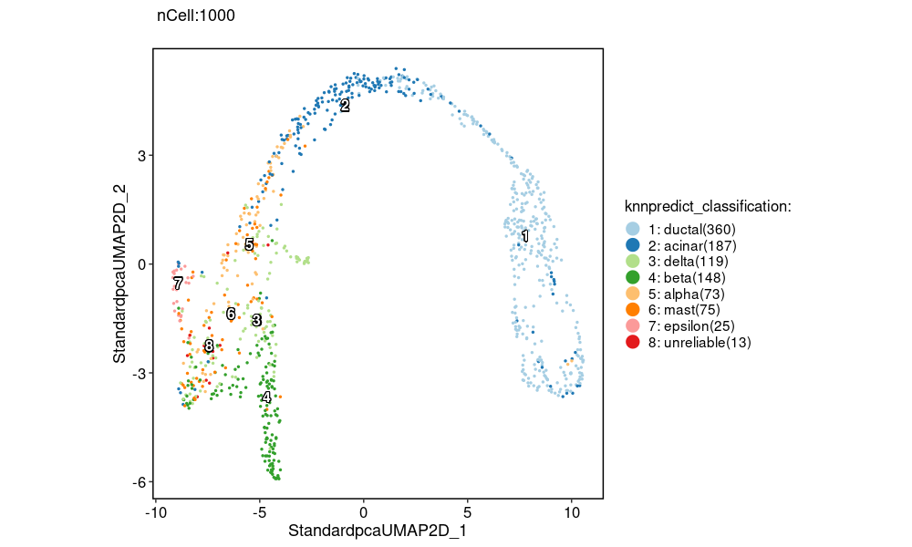
PAGA analysis:
pancreas1k <- RunPAGA(srt = pancreas1k, group_by = "SubCellType", liner_reduction = "PCA",
nonliner_reduction = "UMAP", return_seurat = TRUE)
PAGAPlot(pancreas1k, label = TRUE, label_insitu = TRUE, label_repel = TRUE)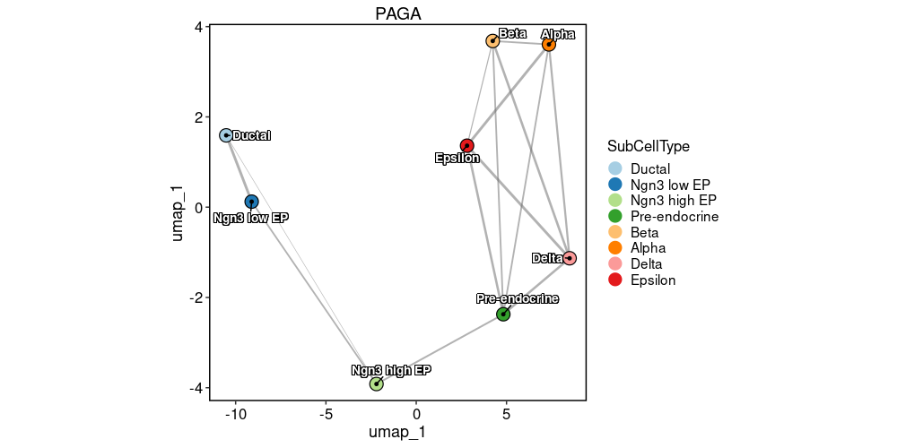
Velocity analysis:
pancreas1k <- RunSCVELO(srt = pancreas1k, group_by = "SubCellType", liner_reduction = "PCA",
nonliner_reduction = "UMAP", return_seurat = TRUE)
VelocityPlot(pancreas1k, reduction = "UMAP", group_by = "SubCellType")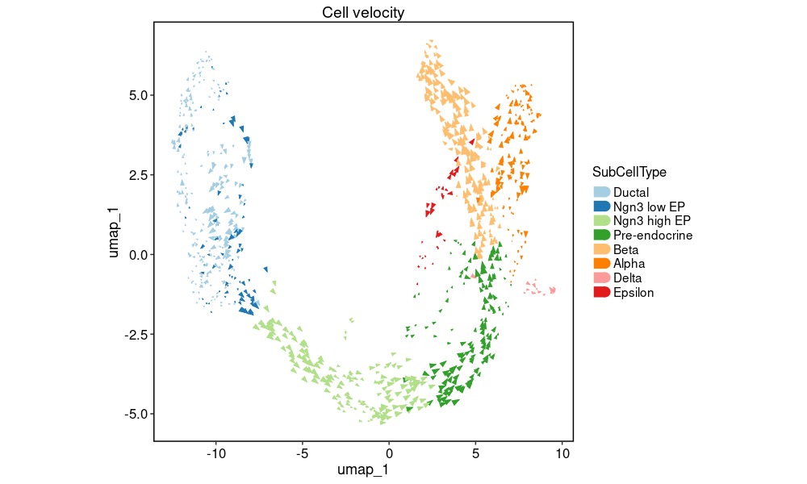
VelocityPlot(pancreas1k, reduction = "UMAP", plot_type = "stream")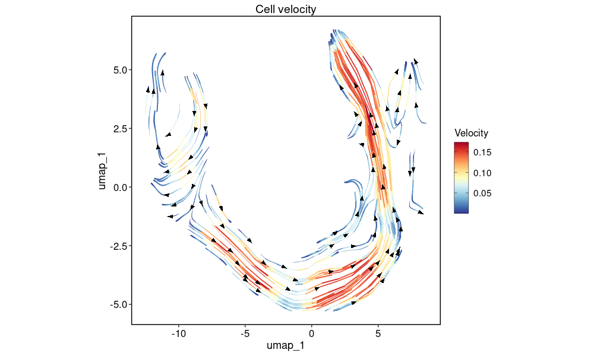
Differential expression analysis:
library(dplyr)
pancreas1k <- RunDEtest(pancreas1k, group_by = "CellType", only.pos = FALSE, fc.threshold = 1)
DEGs <- filter(pancreas1k@tools$DEtest_CellType$AllMarkers_wilcox, p_val_adj < 0.05 &
avg_log2FC > 1)
ExpHeatmapPlot(pancreas1k, genes = DEGs$gene, gene_groups = DEGs$group1, cell_group_by = "CellType")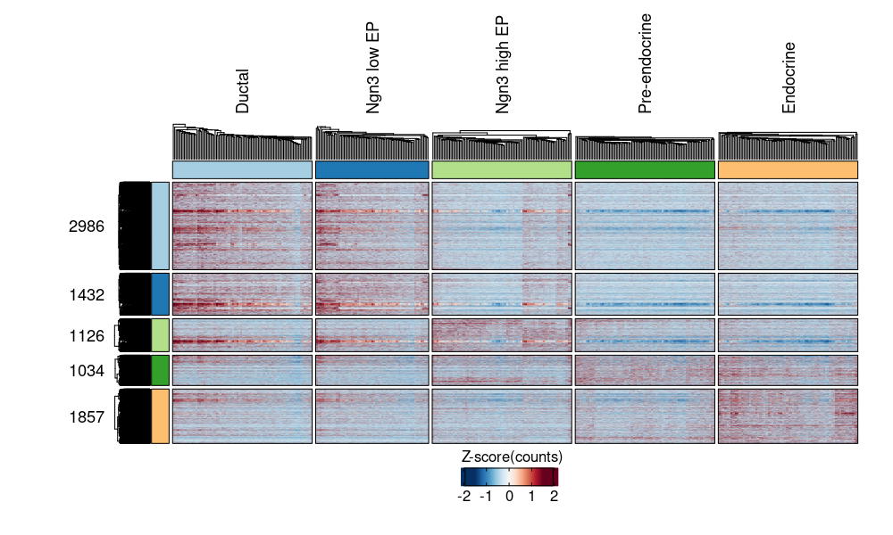
DEGs_top <- DEGs %>%
group_by(gene) %>%
top_n(1, avg_log2FC) %>%
group_by(group1) %>%
top_n(3, avg_log2FC)
ExpDotPlot(pancreas1k, genes = DEGs_top$gene, gene_groups = DEGs_top$group1, cell_group_by = "SubCellType")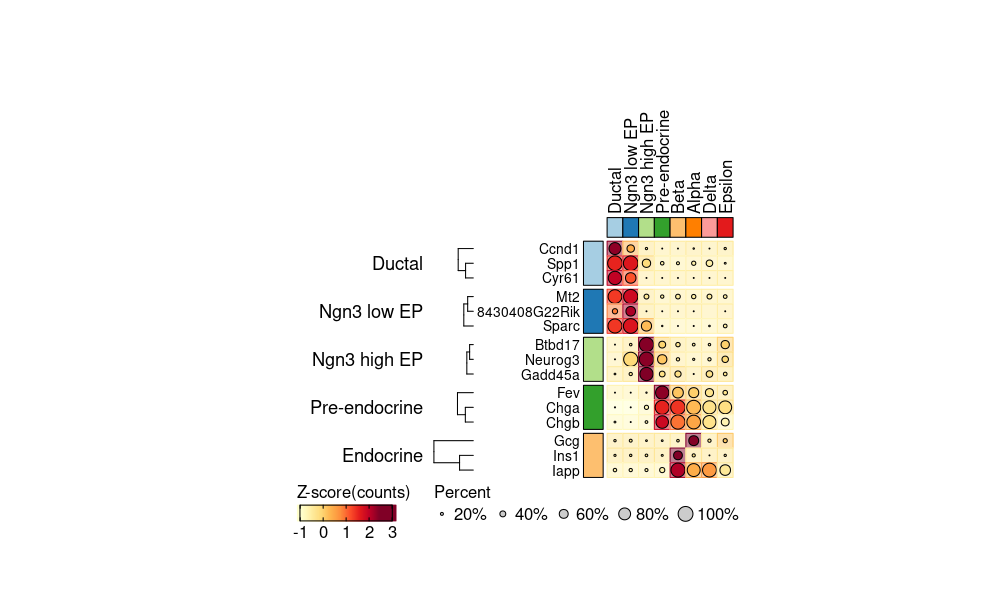
Enrichment analysis(over-representation):
res <- RunEnrichment(geneID = DEGs$gene, geneID_groups = DEGs$group1, enrichment = "GO_BP",
species = "Mus_musculus")
EnrichmentPlot(filter(res$enrichment, Groups %in% c("Ductal", "Endocrine")), plot_type = "bar",
ncol = 1)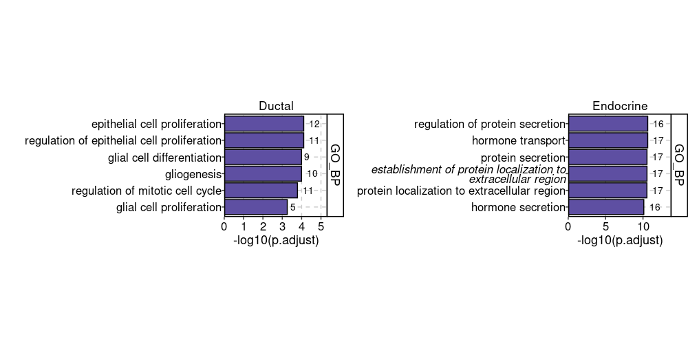
EnrichmentPlot(filter(res$enrichment, Groups %in% c("Ductal", "Endocrine")), plot_type = "wordcloud")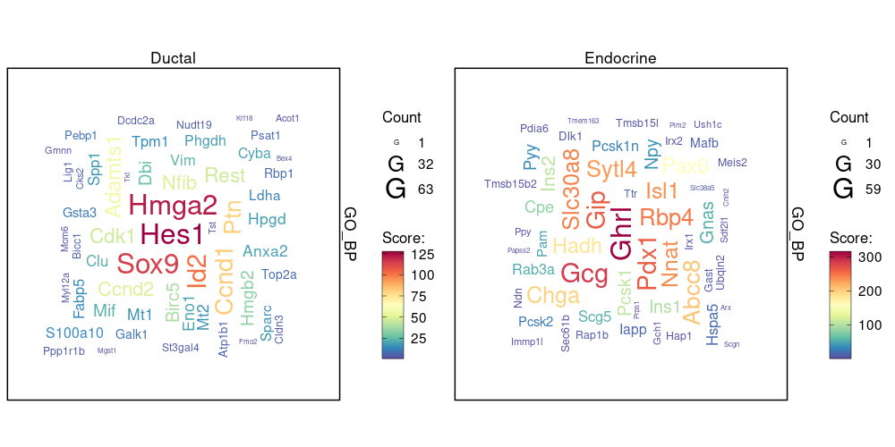
Enrichment analysis(GSEA):
DEGs <- filter(pancreas1k@tools$DEtest_CellType$AllMarkers_wilcox, p_val_adj < 0.05)
res <- RunGSEA(geneID = DEGs$gene, geneScore = DEGs$avg_log2FC, geneID_groups = DEGs$group1,
species = "Mus_musculus")
GSEAPlot(x = res$results[["Ductal-GO_BP"]], geneSetID = "GO:0006412")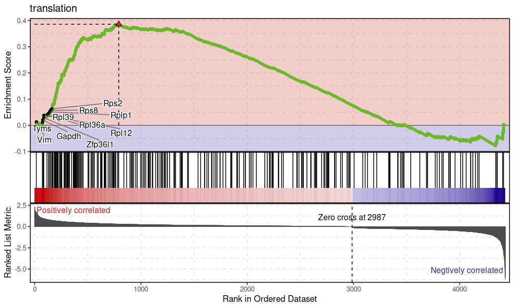
GSEAPlot(x = res$results[["Endocrine-GO_BP"]], geneSetID = "GO:0007186")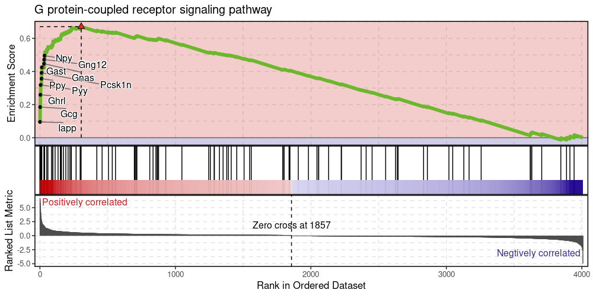
Dynamic features analysis:
pancreas1k <- RunSlingshot(pancreas1k, group.by = "SubCellType", reduction = "UMAP",
show_plot = TRUE)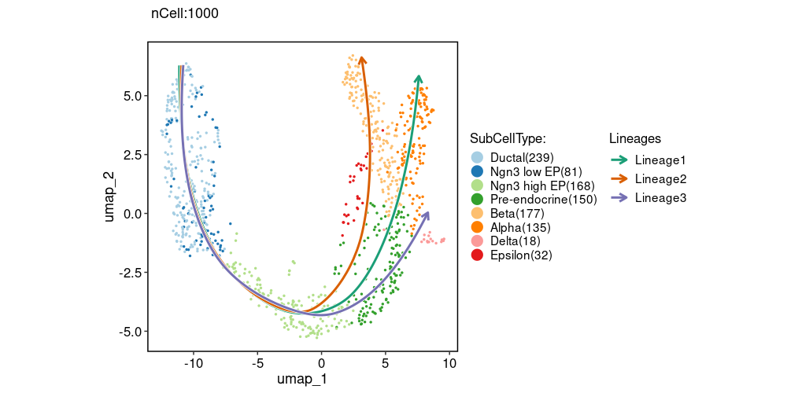
pancreas1k <- RunDynamicFeatures(pancreas1k, lineages = c("Lineage1", "Lineage2"),
n_candidates = 200)
ht_result <- DynamicHeatmap(pancreas1k, lineages = c("Lineage1", "Lineage2"), cell_annotation = "SubCellType",
n_cluster = 6, reverse_ht = "Lineage1", height = 5, width = 7, use_raster = FALSE)
ht_result$plot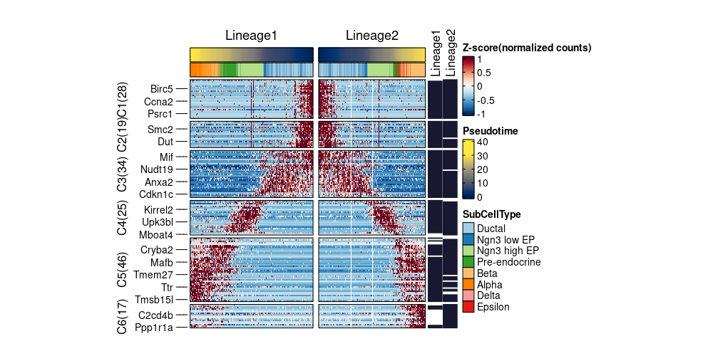
DynamicPlot(pancreas1k, lineages = c("Lineage1", "Lineage2"), features = c("Nnat",
"Irx1"), group.by = "SubCellType", compare_lineages = TRUE, compare_features = FALSE)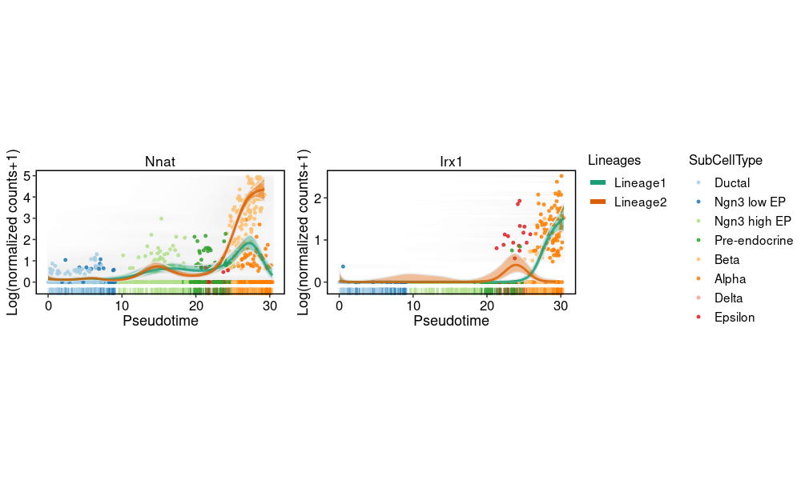